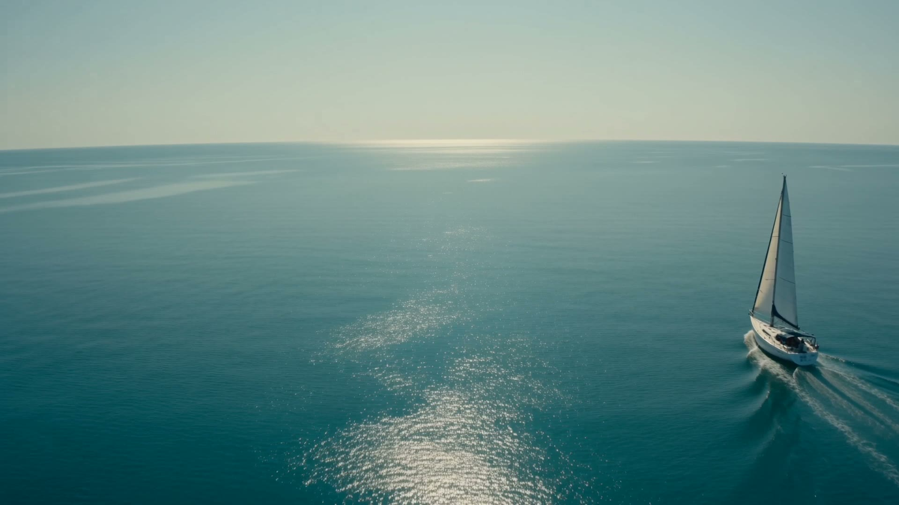
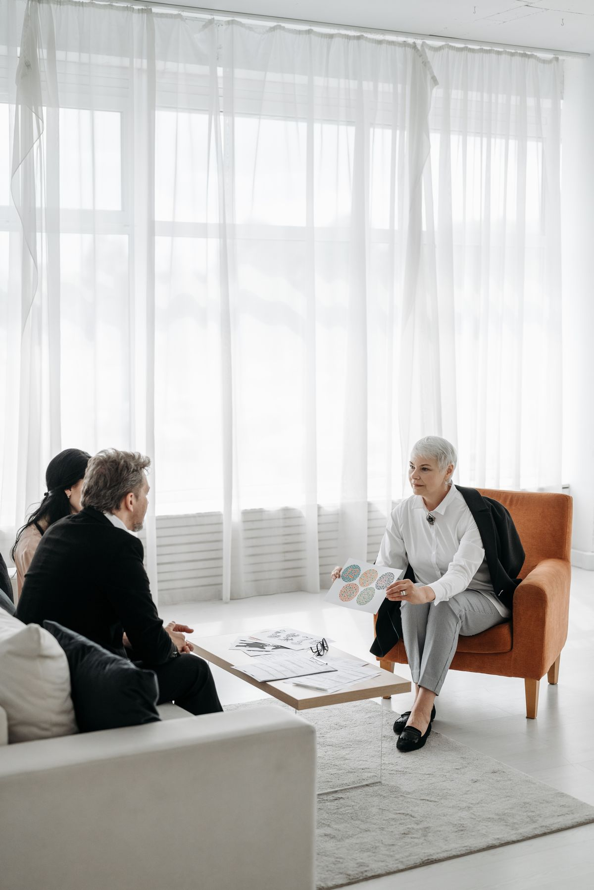
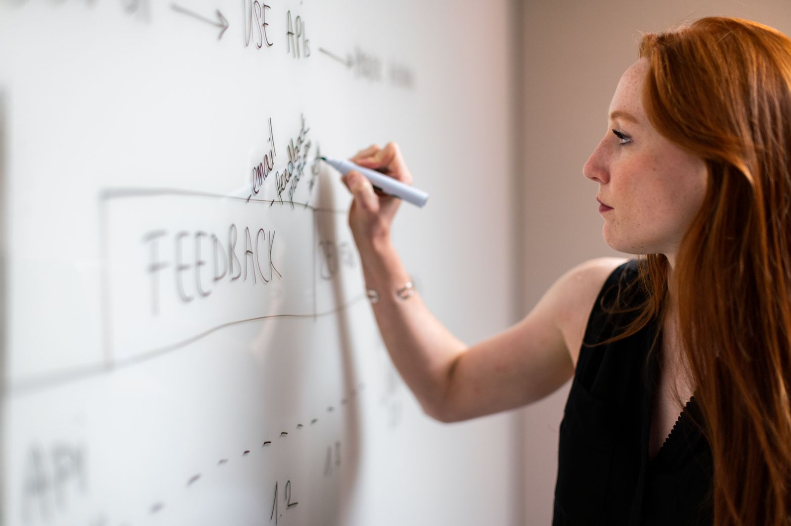
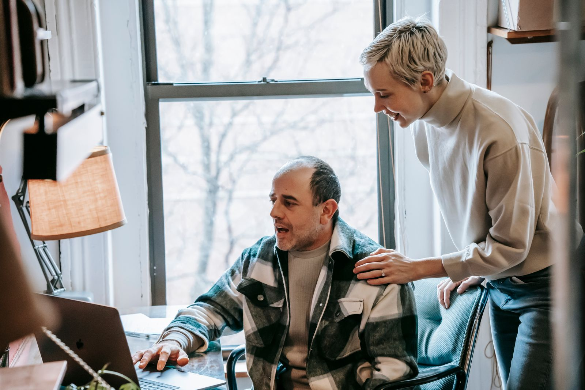

Navigate Growth with Intelligence.
What we do
Systems built around your business.
We take the everyday work off your plate, so your time goes to what moves the business forward.
- SystemsMore clients, with no extra hours.A system built for your kind of business takes care of replies, filing and follow-ups, so you can take on more work without more admin.See our systems
- MarketingA plan made for your business alone.We study your market and your clients, build a strategy for your business, and choose the techniques that fit it. Then we run it, and you see what it brought in.Learn more about marketing
Who it’s for
For businesses ready to grow.
A smoother day-to-day
You want the everyday work to run cleaner, with fewer loose ends and less chasing.
Found by more customers
You want new leads to find you, whether they search Google or ask ChatGPT.
Your time, back
You still answer every call and email yourself, and you’d like your evenings back.
The next chapter
You’re planning to expand, and you want systems strong enough to carry the extra load.



How it works
One conversation. Then it runs.
A discovery call. You tell us what takes your time and what you want to run better. We ask about the sticking points, and we tell you plainly what we can do.
Talk to usWe create the systems. Each one is designed around how your business already works, for the jobs you want off your plate.
What we doWe put them in place. We set the systems up in your business, test them with you, and switch them on when you are happy.
QuestionsAftercare. We look after the systems, fix anything that needs it, and send you a plain monthly note on what happened and what we changed.
Talk to usQuestions
Fair questions. Plain answers.
-
One conversation about where your time goes and where the work comes from. Then a short written plan of what we would automate first and where the clients would come from.
-
No. We build into what you already use rather than replacing it.
-
Two to four weeks for the first system, running inside your tools, checked by us before it goes live.
-
You see everything it does. Nothing goes out that you have not approved the shape of.
-
It runs daily. We review its work, adjust it, and send you one plain note a month: what ran, what it brought in, what we are changing.
Blogs
A plain guide to the age of artificial intelligence.
- The end of the pyramid: how artificial intelligence challenges the agency business model
 Fahad IshtiaqFounder, VelaAI is changing the economics of agency work. Delivery, pricing and expertise will determine which firms turn faster production into value.
Fahad IshtiaqFounder, VelaAI is changing the economics of agency work. Delivery, pricing and expertise will determine which firms turn faster production into value. - The augmented decade: how artificial intelligence will reshape the way we workFahad IshtiaqFounder, VelaAI can expand what your people accomplish. Put the evidence to work through better task design, practical testing and stronger judgement.
- The era of artificial intelligence slop: what makes content worth publishingFahad IshtiaqFounder, VelaAI makes content easier to produce. Clear arguments, sound evidence and editorial judgement make it worth reading.


Tell us what takes your time.
One conversation, then a short written plan of what we would take off your desk first.